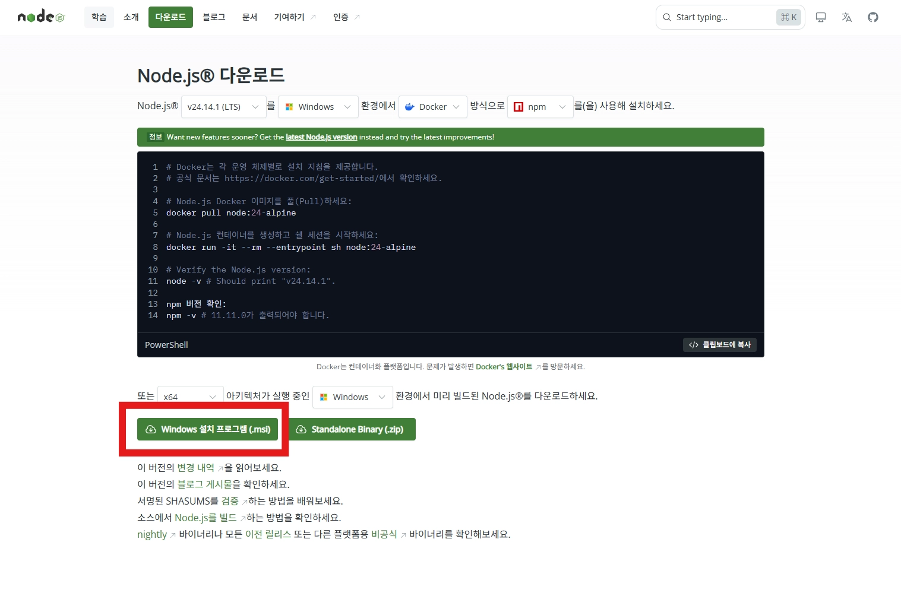

3 · Node.js 설치¶
이 페이지에서 하는 일
- 웹 서버를 구동하는 런타임 Node.js를 설치합니다
- 터미널에서
node --version·npm --version이 숫자를 답하면 통과입니다
- Node.js는 자바스크립트를 브라우저 밖에서 실행할 수 있게 해주는 런타임 환경입니다.
- 실습에서는 프론트엔드(화면을 그려주는 서버)와 백엔드(데이터를 보내주는 서버)를 만드는 데 씁니다.
Windows에서 설치하기¶
Windows에서 가장 간단한 방법은 공식 설치 프로그램을 쓰는 것입니다.
1. 설치 프로그램 다운로드¶
Node.js 공식 사이트에 접속합니다.
https://nodejs.orgx64 아키텍처의 Windows용으로 미리 빌드된 버전을 받습니다. 하단의 Windows 설치 프로그램(.msi) 버튼을 눌러 다운로드하세요.

2. 설치 진행¶
다운로드한 .msi 파일을 실행합니다.
- 라이선스 동의 — "I accept the terms in the License Agreement"를 체크하고
Next. - 설치 경로 — 기본 경로(
C:\Program Files\nodejs\)를 유지하고Next. - 설치 항목 선택 — 기본 설정을 유지합니다. 다음이 함께 설치됩니다.
- Node.js runtime
- npm package manager
- Add to PATH
Add to PATH는 반드시 체크되어 있어야 합니다
이 옵션이 있어야 터미널에서 node 명령을 쓸 수 있습니다. 기본값이 체크이니 건드리지 마세요.
3. Tools for Native Modules¶
"Automatically install the necessary tools"를 체크하면 C++ 빌드 도구가 함께 설치됩니다. 일부 npm 패키지(예: bcrypt, sharp)는 네이티브 모듈을 컴파일해야 하므로 체크를 권장합니다.
Install 버튼을 눌러 설치를 완료합니다.
macOS에서 설치하기¶
Node.js 공식 사이트에서 macOS Installer(.pkg)를 받아 실행하고, 안내대로 설치합니다. (Add to PATH에 해당하는 설정은 자동으로 처리됩니다.)
설치 확인¶
설치가 끝나면 새 명령 프롬프트(또는 터미널) 창을 엽니다. 기존에 열려 있던 창은 PATH가 업데이트되지 않았을 수 있습니다.
node --version이렇게 나오면 정상입니다
v20.x.x 형태의 버전이 출력됩니다.
npm도 함께 설치됐는지 확인합니다.
npm --version버전 번호가 출력되면 npm도 정상 설치된 것입니다.
Installation complete!가 떴는데 버전이 안 나온다면
창을 완전히 닫았다가 새 창을 열어 같은 명령을 다시 입력하세요. PATH는 새 창부터 반영됩니다.